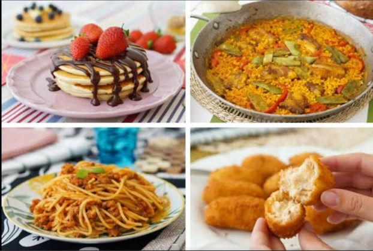

Mi comida favorita
Yo no soy como otras personas que pueden decir que tienen una
unica comida favorita en mi caso yo como casi todo lo que mi mamá hace
pero si tengo una serie de alimentos que me gustas mas que otros como
el espagueti verde, el huevo, las tortas de cualquier tipo, y las lentejas
pero entre todas esas no puedo decir que una comida me gusta mas que otra
